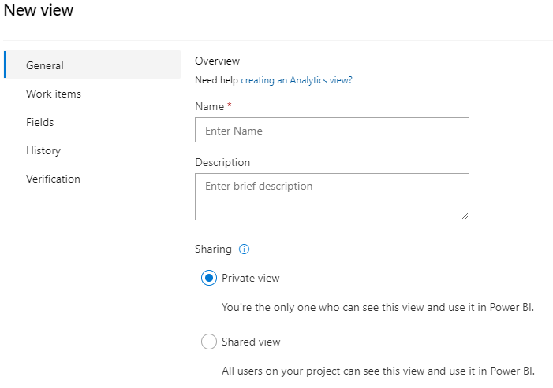

Azure DevOps - Analytic Views
Azure DevOps Boards'da "Analytic Views" (Analitik Görünümler) kullanarak genel bir görünüm oluşturabilirsiniz. Bu genel görünüm, projenizin genel performansını, ilerlemesini veya diğer analiz ihtiyaçlarınızı temsil etmek için kullanılır.
- Azure DevOps Boards'a gidin ve projenizi seçin.
- Sol taraftaki menüden "Analytics" (Analitik) bölümüne gidin.
- "Views" (Görünümler) sekmesine tıklayın.
- "New View" (Yeni Görünüm) düğmesini tıklayın.
- Görünümünüze bir ad ve gerektiğinde açıklama belirleyin.
- "General" (Genel) seçeneğini seçin, çünkü yeni görünümünüz genel bir analitik görünüm olacak.
- Gerekli widget'ları ekleyin ve yapılandırın. Widget'lar, projenizin genel performansını, ilerlemesini veya diğer analiz ihtiyaçlarınızı temsil etmek için kullanılır.
- Her widget için ilgili konfigürasyonları yapın. Örneğin, grafik türü, veri kaynağı, filtreler, sütunlar vb.
- Widget'ları düzenlemek, yeniden boyutlandırmak veya kaldırmak için ilgili seçenekleri kullanın.
- Görünümünüzü kaydedin ve istediğiniz zaman erişmek için adını ve açıklamasını kaydedin.
Bu genel analitik görünüm, projenizin genel performansını veya ilerlemesini görselleştirmek için kullanılabilir. Widget'ları yapılandırarak ihtiyaçlarınıza ve analiz gereksinimlerinize göre özelleştirebilirsiniz. Bu şekilde, projenizin ilerlemesini izlemek, ekip performansını değerlendirmek ve süreç iyileştirmeleri yapmak için kullanabilirsiniz.
